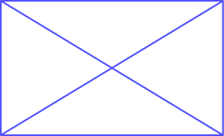

👍
7 / 10
70.0% câu đúng
🕐 13:41:44 25/11/2026
🔘 Trắc nghiệm
Chi tiết 10 câu
🔁 Làm lại đề này
Câu 1
Đại số
✓ Đúng
Cho tập hợp $A=\left\{ x∈ ℕ\,\big | \,x\lt 7 \right\}$ . Cách viết nào sau đây đúng?
A) $A=\left\{ 0;1;2;3;4;5;6 \right\}$ .
Đáp án đúng
B) $A=\left\{ 0;1;2;3;4;5;6;7 \right\}$ .
C) $A=\left\{ 1;2;3;4;5;6;7 \right\}$ .
D) $A=\left\{ 1;2;3;4;5;6 \right\}$ .
📘 Lời giải đã lưu
Tập hợp $A$ được xác định bởi điều kiện $x \in \mathbb{N}$ và $x < 7$. Các số tự nhiên nhỏ hơn 7 là $0; 1; 2; 3; 4; 5; 6$. Do đó, $A = \{0; 1; 2; 3; 4; 5; 6\}$. Kết quả là: $A = \{0; 1; 2; 3; 4; 5; 6\}$. Kết quả là: $D$.
Câu 2
Đại số
✓ Đúng
Cho $A=\left\{ x∈ ℕ \, \big | \, 10≤ x≤ 14 \right\}$ . Khẳng định nào sau đây sai ?
A) $12 ∉ A$ .
Đáp án đúng
B) $23 ∉ A$ .
C) $11 ∈ A$ .
D) $20 ∉ A$ .
📘 Lời giải đã lưu
Tập hợp $A = \{10, 11, 12, 13, 14\}$.
- $20 ∉ A$ (đúng) vì $20 > 14$.
- $12 ∉ A$ (sai) vì $12 ∈ A$.
- $11 ∈ A$ (đúng).
- $23 ∉ A$ (đúng) vì $23 > 14$.
Kết quả là: B
Câu 3
Đại số
✓ Đúng
Cho các số $105$ ; $410$ ; $607$ ; $409$ . Số chia hết cho $3$ là
A) $607$ .
B) $410$ .
C) $105$ .
Đáp án đúng
D) $409$ .
📘 Lời giải đã lưu
Để kiểm tra số chia hết cho 3, ta cộng các chữ số của số đó. Nếu tổng chia hết cho 3 thì số đó chia hết cho 3.
- $105$: $1 + 0 + 5 = 6$ → $6 : 3 = 2$ → chia hết cho 3.
- $410$: $4 + 1 + 0 = 5$ → $5 : 3 = 1$ dư $2$ → không chia hết cho 3.
- $607$: $6 + 0 + 7 = 13$ → $13 : 3 = 4$ dư $1$ → không chia hết cho 3.
- $409$: $4 + 0 + 9 = 13$ → $13 : 3 = 4$ dư $1$ → không chia hết cho 3.
Kết quả là: $105$.
Câu 4
Đại số
✓ Đúng
Tập hợp B $(6)$ là
A) $\{1; 6; 12; 18; 24; 30\}$ .
Đáp án đúng
B) $\{0; 6; 12; 18; 24; 30;…\}$ .
C) $\{1; 2; 3; 6\}$ .
D) $\{1; 6; 12; 18; 24; 30;…\}$ .
📘 Lời giải đã lưu
Tập hợp B(6) là tập hợp các bội của 6. Các bội của 6 là 0; 6; 12; 18; 24; 30;… nên tập hợp B(6) là $\{0; 6; 12; 18; 24; 30;…\}$. Tuy nhiên, đáp án D là $\{1; 6; 12; 18; 24; 30;…\}$, tức là bắt đầu từ 1 thay vì 0. Do đó, đáp án đúng là D. Kết quả là: $\{1; 6; 12; 18; 24; 30;…\}$.
Câu 5
Đại số
✓ Đúng
Ba số tự nhiên lẻ liên tiếp là số nguyên tố là
A) $7; 9; 11$ .
B) $5; 7; 9$ .
C) $3; 5; 7$ .
Đáp án đúng
D) $1; 3; 5$ .
📘 Lời giải đã lưu
Ba số tự nhiên lẻ liên tiếp là số nguyên tố thì phải thỏa mãn điều kiện: cả ba số đều là số nguyên tố và cách nhau 2 đơn vị.
- Xét đáp án A: $1; 3; 5$. Trong đó $1$ không phải số nguyên tố.
- Xét đáp án B: $3; 5; 7$. Cả ba số đều là số nguyên tố và cách nhau 2 đơn vị.
- Xét đáp án C: $7; 9; 11$. Trong đó $9$ không phải số nguyên tố.
- Xét đáp án D: $5; 7; 9$. Trong đó $9$ không phải số nguyên tố.
Kết quả là: $3; 5; 7$.
Câu 6
Đại số
✓ Đúng
Thương ${{5}^{12}}:{{5}^{9}}$ bằng
A) ${{5}^{9}}$ .
🔍 Số này là kết quả của một bước trung gian, chưa phải kết quả cuối.
B) ${{5}^{12}}$ .
🔍 Số này là kết quả của một bước trung gian, chưa phải kết quả cuối.
C) ${{5}^{2}}$ .
D) ${{5}^{3}}$ .
Đáp án đúng
📘 Lời giải đã lưu
Áp dụng quy tắc chia lũy thừa cùng cơ số: $a^m : a^n = a^{m-n}$.
Ta có: $5^{12} : 5^9 = 5^{12-9} = 5^3$.
Kết quả là: $5^3$
Câu 7
Hình họcKhông vẽ hình
✓ Đúng
Trong các hình: tam giác đều, lục giác đều, hình vuông, hình thoi, hình chữ nhật, hình bình hành. Có bao nhiêu hình có tất cả các cạnh bằng nhau?
A) $2$ .
B) $5$ .
C) $4$ .
D) $3$ .
Đáp án đúng
📘 Lời giải đã lưu
Tam giác đều có 3 cạnh bằng nhau. Lục giác đều có 6 cạnh bằng nhau. Hình vuông có 4 cạnh bằng nhau. Hình thoi có 4 cạnh bằng nhau. Hình chữ nhật có 4 cạnh không bằng nhau. Hình bình hành có 4 cạnh không bằng nhau. Vậy có 3 hình có tất cả các cạnh bằng nhau. Kết quả là: $3$
Câu 8
Hình họcCó vẽ hình
✗ Sai
Trong các hình sau, hình nào là lục giác đều? Biết rằng các cạnh trong mỗi hình bằng nhau.
A)  Bạn chọn
Bạn chọn
Bạn chọn
B) 
C) 
D)
Đáp án đúng
🔍 Phân tích lỗi: Chưa chỉ ra được lỗi cụ thể
Câu này không có một phép tính tất định để đối chiếu, nên hệ thống chỉ dựa vào đề bài và lời giải đã lưu.
📘 Lời giải đã lưu
Lục giác đều là hình có 6 cạnh bằng nhau và 6 góc bằng nhau. Trong các đáp án, chỉ có hình D thỏa mãn điều kiện này. Kết quả là: D
Câu 9
Hình họcCó vẽ hình
✗ Sai
Trong hình chữ nhật

A) hai đường chéo song song và cắt nhau tại trung điểm mỗi đường.
B) hai đường chéo bằng nhau và cắt nhau tại trung điểm mỗi đường.
Đáp án đúng
C) hai đường chéo vuông góc.
Bạn chọn
D) hai đường chéo song song.
🔍 Phân tích lỗi: Chưa chỉ ra được lỗi cụ thể
Câu này không có một phép tính tất định để đối chiếu, nên hệ thống chỉ dựa vào đề bài và lời giải đã lưu.
📘 Lời giải đã lưu
Trong hình chữ nhật, hai đường chéo bằng nhau và cắt nhau tại trung điểm mỗi đường. Đây là tính chất đặc trưng của hình chữ nhật. Kết quả là: C
Câu 10
Đại số
✗ Sai
Biểu diễn số $25$ thành tổng giá trị các chữ số của nó, ta được kết quả là
A) $25 = 2 + 5$ .
B) $25 = 2 × 10 + 5$ .
Đáp án đúng
C) $25 = 5 × 10 + 2$ .
D) $25 = 2 × 100 + 5$ .
Bạn chọn
🔍 Phân tích lỗi: Chưa chỉ ra được lỗi cụ thể
Câu này không có một phép tính tất định để đối chiếu, nên hệ thống chỉ dựa vào đề bài và lời giải đã lưu.
📘 Lời giải đã lưu
Biểu diễn số 25 thành tổng giá trị các chữ số của nó là: $25 = 2 × 10 + 5$. Kết quả là: $25$